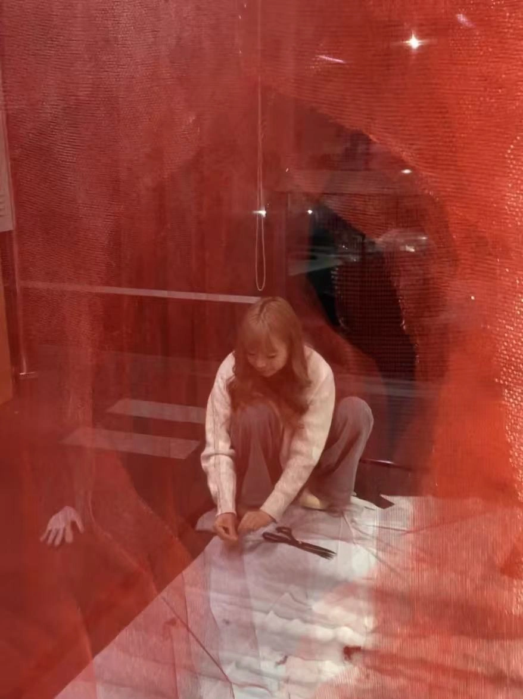
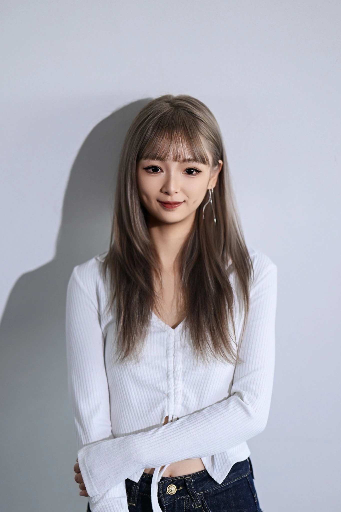

Introduction
Faye Xi (Fei Xi) is an independent artist from Sichuan, China, with a background in sustainable architecture and landscape design. Working across installation, painting and site-responsive practice, she explores how landscapes are experienced through the body, and how attention to materials and changing conditions can open different ways of sensing time.


Practice & background
Areas of practice
Installation
Painting
Spatial practice
Site-responsive interventions
Education
MSc Sustainable Architecture
and Landscape Design
Politecnico di Milano
Exchange studies
University of Queensland, 2025
Lines of enquiry
Landscape & ecology
Time & impermanence
Body & perception
Material & place
Walking, waiting and listening form a quiet thread through her practice. She is preparing to begin doctoral study in art at Massey University, Aotearoa New Zealand.
Time / Site / Body
How might artistic practice cultivate an awareness of slow and layered time? Through walking, waiting, listening and subtle interventions, my research explores how we perceive changing landscapes—and where these ways of attending reach their limits.
A practice in formation
Informed by phenomenology, Daoist philosophy and environmental humanities, this enquiry develops through embodied encounters with particular places.
Temporary installations, moving images, field notes and reflective writing offer ways to return to these encounters, without fixing them into a single account.
Proposed doctoral research
Massey University, Aotearoa New Zealand
Ways of attending
Walking
Following paths, revisiting sites, noticing what shifts.
Waiting
Remaining with a place as light, weather and rhythms change.
Listening
Attending to the body and to what a site makes perceptible.